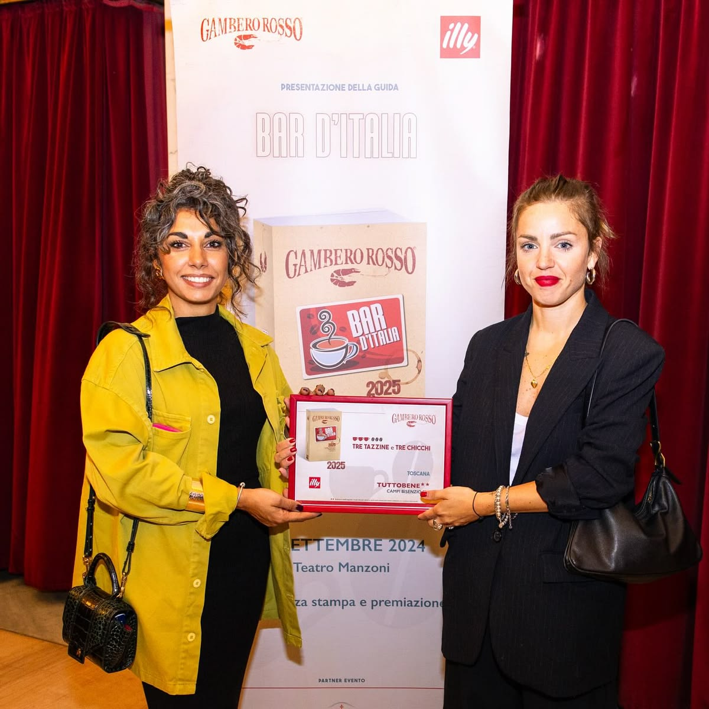
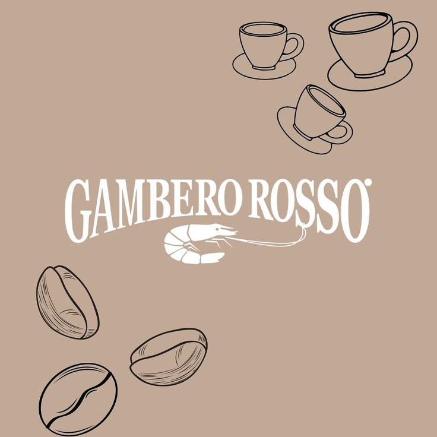

Menzioni & Premi
Tre Tazzine e Tre Chicchi: il massimo della guida Bar d'Italia — la "stella Michelin" dei bar. E la doppia stella ★★, riservata a chi resta al vertice per oltre vent'anni consecutivi.
Leggi l'articolo →Migliore pasticceria di Firenze e dintorni: 49 punti dai maestri pasticceri, conquistando il cappello d'oro grazie a cura del dettaglio e sapori bilanciati.
Leggi l'articolo →Menzione speciale della giuria al premio "Bar dell'anno" 2013, «per la giusta mediazione tra alta qualità e grandi numeri».
Leggi l'articolo →Citato tra «i 15 locali dove bere il caffè migliore di sempre»: lievitati, cremini, scendiletto e altre delizie.
Corriere Cook →Segnalato dalla prestigiosa guida internazionale Falstaff tra le pasticcerie e i caffè da non perdere.
Vedi la scheda →Oltre 3.400 recensioni su Google e quasi 500 su Tripadvisor: «top di gamma», «pasticceria da urlo». Travellers' Choice e n. 1 delle caffetterie di Campi Bisenzio.
Leggi le recensioni →

